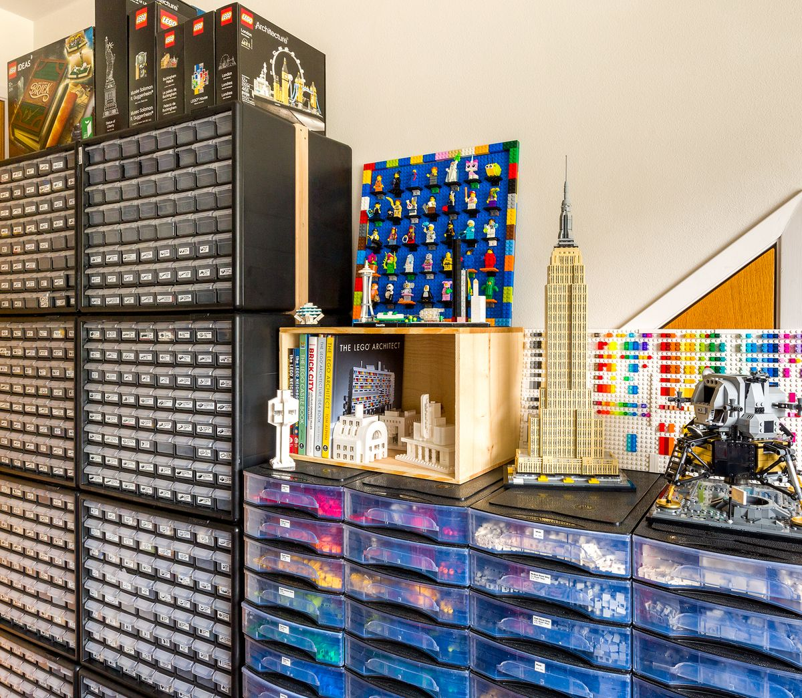

Organize and Store Your LEGO Collection
The story of LEGO began in the small town of Billund, Denmark, in 1932, when a carpenter named Ole Kirk Christiansen started making wooden toys. Little did he know that his small workshop would eventually become one of the most beloved and influential toy companies in the world.
In 1934, Christiansen's company adopted the name "LEGO," derived from the Danish phrase "leg godt," which means "play well." This name would later prove to be prophetic as LEGO evolved into a brand synonymous with creativity, imagination, and quality.
During the early years, LEGO primarily produced wooden toys, but in 1949, the company introduced the first interlocking plastic bricks, which we now recognize as the modern LEGO bricks. These bricks were revolutionary because they allowed for endless building possibilities, sparking creativity in children and adults alike.
The true breakthrough came in 1958 when the iconic LEGO brick design was patented. This design included the unique stud-and-tube coupling system that provides stability and versatility, making it possible to build complex structures that remain sturdy. This innovation set LEGO apart from other building toys and laid the foundation for its future success.
Throughout the decades, LEGO continued to innovate and expand its product line. In the 1970s, the introduction of minifigures added a new dimension to LEGO play, allowing for more imaginative storytelling and role-playing. Sets began to include detailed instructions, enabling builders to create specific models and themes, from cityscapes to space exploration.
The 1990s and 2000s saw LEGO embracing technology with the launch of Mindstorms, a line of robotic kits that combined traditional LEGO building with computer programming. This blend of physical and digital play appealed to a new generation of builders and opened up even more possibilities for creative expression.
Today, LEGO remains a global phenomenon, with a diverse range of products that cater to all ages. From the youngest builders using DUPLO blocks to advanced modelers tackling intricate Technic sets, LEGO continues to inspire and challenge minds worldwide. The brand's commitment to quality, creativity, and playfulness ensures that it will remain a cherished part of childhoods for generations to come.
In addition to its products, LEGO has also made significant strides in sustainability and social responsibility. The company is working towards using sustainable materials in its products and packaging, and it supports various educational and charitable initiatives that promote learning through play.
The history of LEGO is a testament to the power of imagination and the enduring appeal of a simple, yet ingenious, building system. As LEGO continues to evolve and innovate, it remains true to its core mission: to inspire and develop the builders of tomorrow.